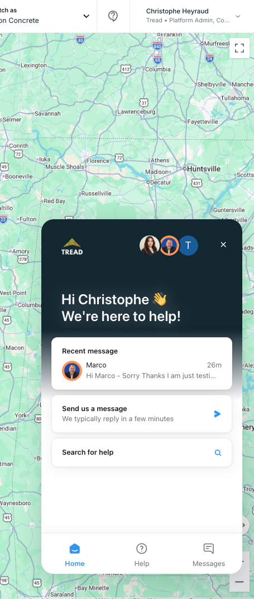

Support Popup
Recommendations
An audit of the in-app Intercom messenger against what the workspace actually contains — plus a brand-compliant redesign of the Messenger home. Key insight: this is a discovery problem, not a content problem. The articles and the AI agent already exist; the popup just hides them.
What the workspace audit found
published articles in the Help Center — Adding Drivers, Creating Projects, Approvals, Fuel Surcharges, release notes — none surfaced on the messenger home beyond a bare search box.
conversations where Fin AI already participated (via the "Hzon Web Triage queries" workflow) — with confirmed resolutions citing articles. It works; it just has no visible entry point.
parts in a single conversation, reopened 28×. The home screen's "recent message" prominence trains customers to reuse one eternal thread, wrecking routing and stats.
context plumbing is healthy: conversations carry page URL, identity hash, company, and roles from the app. The foundation is solid — the surface is not.
Branded UI — current vs proposed
The proposed Messenger home follows Tread brand guidelines — ink header with hazard accent and the cdn.tread.io yellow-white wordmark, yellow action color — and reorders the hierarchy: AI answers first, curated guides second, human chat third, with docs and status one tap away. Everything shown is configurable through Intercom's Messenger settings; no custom widget needed.

Hi Christophe 👋 How can we help?
Instant answers from 408 guides — resolves most questions without waiting.
Popular guides
Smarter conversation starts
Today every thread begins with a generic "Reporting an issue" body, gets hand-tagged, and lives forever (the 371-part thread). Quick-reply starters route and tag automatically — and nudge each topic into its own conversation.
New conversation
Rebuild Messenger home
Fin entry card first, curated top-articles card, docs/status links, News space for release notes. All in Messenger settings.
Promote Fin to web first-responder
It already confirms resolutions from triage. The audit estimates 30–40% deflection of how-to tickets (21.6% of volume).
Quick-reply starters with auto-tagging
Replace "Reporting an issue" with the four-button starter; retire hand-applied tags like "Acc support Hzon".
Honest reply-time + office hours
"Replies in a few minutes" at 2am erodes trust. Show team hours; let Fin own the night shift.
Curate Help collections
408 articles need a top-tasks front page: the five most-asked topics from the support audit, pinned.
The header entry point — retire the bare "?"
Today the only persistent support entry is an unlabeled "?" icon in the header. Usability research is unambiguous here: icon-only buttons work only for universal glyphs (search, close, play), and "?" is genuinely ambiguous — it can mean tooltips, docs, or keyboard shortcuts. NN/g's guidance: icons need always-visible text labels, not hover reveals. The prevailing SaaS pattern (Monday, Mixpanel) is a labeled Help button opening a compact resource-center menu — every support channel one click away, deep-linked into the messenger via the Intercom JS API.
Label the button: "? Help ▾"
Per NN/g, the label must be always visible — not a tooltip. Costs ~60px of header width, removes all ambiguity about what the button does.
Open a resource-center menu, not the messenger directly
Menu items deep-link via the Intercom JS API: Ask AI → show() into the Fin space; Search guides → showSpace('help'); What's new → showSpace('news'); docs.tread.ai and status open in new tabs.
Unread badge on the Help button
Wire Intercom('onUnreadCountChange') to a badge — today a support reply is invisible unless the user reopens the popup, which fuels the eternal-thread reopen pattern.
Keep placement top-right, keep it everywhere
Research supports the header position — users look there for help. The fix is labeling and the menu, not relocation. Mobile/narrow: collapse to icon + badge inside the overflow menu.
Code-side changes (horizon-fe)
Enable the messenger on staging
The custom launcher renders production-only, so none of this is testable pre-prod. Gate by env var instead of hardcoding 'production'.
Deep-link the header "?" via the Messenger JS API
Intercom('showSpace','help') straight into search; showNewMessage(prefill) from error states with the failing order/job ID pre-filled.
Fix popup placement over the Live Map
The popup currently covers map controls (see screenshot). Set alignment/padding in messenger settings or boot config.
Decide: Intercom vs the Tread agent orb
The splash proposals reserve bottom-right for an agentic assistant; Intercom sits bottom-left. Decide whether the future Tread agent replaces the Intercom entry point or they coexist — before both ship.
Recommendation
Ship the dashboard changes first — the branded home, Fin-first entry, and quick-reply starters are configuration, not code, and attack the measured 21.6% how-to volume with content that already exists. Pair with the two low-effort code items (staging enablement, placement fix) in the same sprint. Treat the agent-orb decision as a prerequisite for the splash-proposal rollout so the two assistants don't land on top of each other.